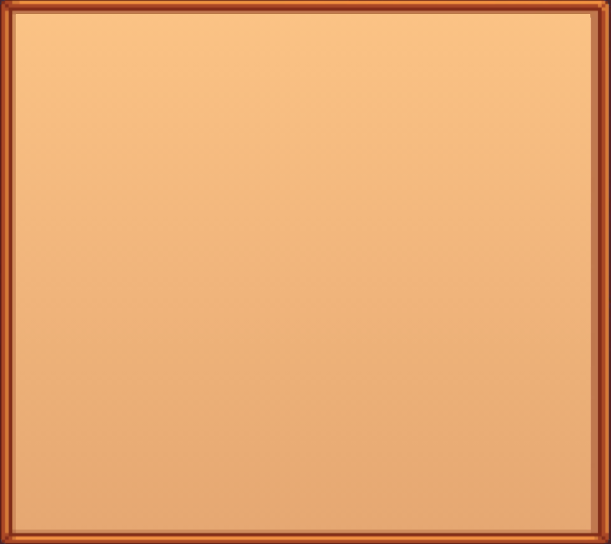

Hi, there, my name is Zara! :D Here's some information about me:
I'm a high schooler who likes coding. I first started coding at a young age, building simple
games on Scratch, and learning more about different languages from Khan Academy
courses. Hackclub has helped me get back into coding, so I've recently started making more projects! ^v^
Some of my favourite shows are Avatar: the last Airbender, Frieren: Beyond Journey's End, Attack on Titan, and Haikyuu!! I also like playing games. I adore the Paper Mario series, Animal Crossing: New Horizons, and, as you may have guessed, Stardew Valley.
Some imagery from Stardew Valley - all rights to ConcernedApe | Wallpaper by robert.rogowsky on Wallpapers.com | Cursor from Frog_Lilly on https://www.rw-designer.com/